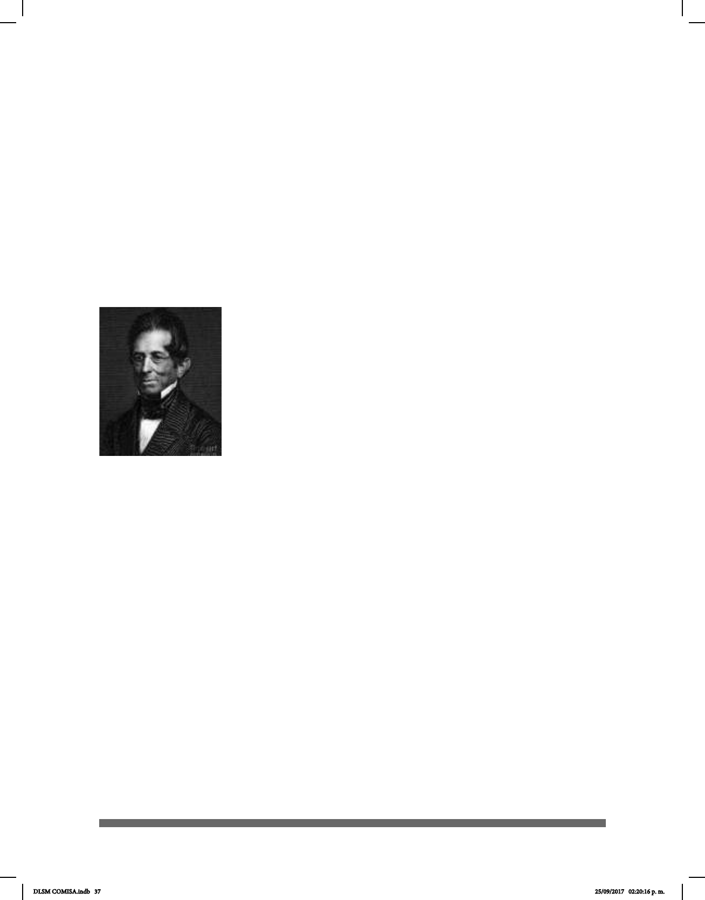

37
cesa). Propuso que las señas tenían más componentes, que no eran una unidad
mínima. Realizó un análisis estructural de la LSF, ya que un sistema de escritura hacía
posible la descomposición y el ordenamiento de las unidades de la lengua en
niveles de organización. La lingüística de las lenguas orales había surgido gracias a
que se habían desarrollado sistemas alfabéticos de escritura. El mismo principio que
proponía Bébian lo hizo William Stokoe,138 años después, sus fundamentos
básicos son muy parecidos.
Sus éxitos como maestro fueron registrados por sus alumnos sordos. En 1834
regresó a Guadalupe, donde fundó la primera escuela pública del país. Bébian falleció en
Pointe-à-Pitre el 24 de febrero de 1839.
Mientras Sicard estaba en Inglaterra explicando el método francés de
enseñar a los sordos conoció a Thomas Hopkins Gallaudet
(1787-1851), un americano que fue enviado a Europa con la
finalidad de aprender un método para enseñar a los sordos;
intentó primero formarse en Inglaterra, pero no tuvo éxito debido
al secreto con que mantenían sus métodos y a su oposición
frente a la pretensión de Gallaudet de aprender métodos orales
y manuales. Como conocía los escritos educativos de Sicard,
decidió establecer contacto con él en una de sus conferencias
en Londres. Sicard se ofreció a enseñar a Gallaudet en París
junto con dos de sus discípulos, Massieu y Clerc, profesores
sordos que trabajaban también en el Instituto de París.
Gallaudet volvió a Estados Unidos junto con Clerc y fundó en
Hartford en 1917 el denominado Asilo Americano para la Educación e Instrucción de
Sordos y Mudos, en el que se utilizaba tanto el inglés signado, cercano a las señas
metodológicas de L’Epée, como la ASL (American Sign Language). Clerc enseñó la
lengua de señas a todos los profesores y a otros que venían a aprenderla de las nuevas
escuelas que se iban creando en los Estados Unidos. Clerc llevó a Estados Unidos tanto
la lengua de señas francesa como el francés señado.
Gallaudet y Clerc comenzaron a emplear una mezcla del LSF, del francés
señado y del inglés, pero pronto se dieron cuenta de las dicultades de su uso y de las
complejidades innecesarias que presentaba. Por ello se orientaron a la recuperación del
lenguaje natural de los sordos, la ASL. Un proceso semejante fue impulsado en Francia por
Bebían, sucesor de Sicard en el Instituto de París, al considerar que las señas
metódicas añadidas al lenguaje natural de las señas eran poco satisfactorias y útiles para
la comprensión de las frases, ya que rompían las relaciones lógicas entre los distintos
elementos que constituían cada frase.
En el siglo XIX Jean-Marc Itard (1774-1838) fue conocido por su dedicación a la
educación del niño salvaje de Aveyron (Lane, 1976). Su trabajo estuvo también
dedicado a los niños sordos.
Thomas Hopkins
Gallaudet
DLSM COMISA.indb 37 25/09/2017 02:20:16 p. m.